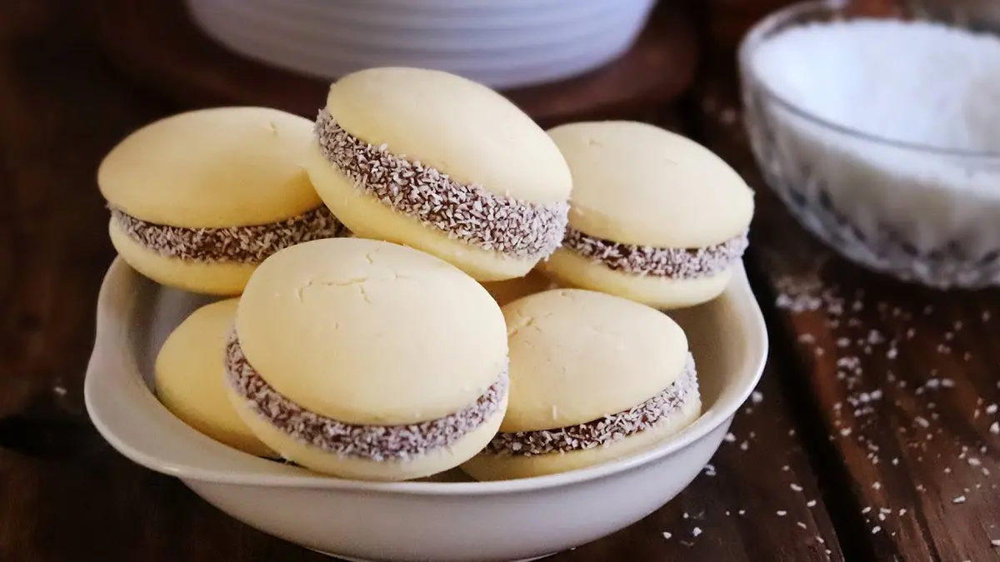

Alfajores de maizena

Recipe
A must at birthdays and get-togethers for all Argentines, young or old. This is the original recipe, the one from the Maizena recipe book. These cornstarch alfajores are very easy to make, just follow a few tips to achieve the ideal soft and crumbly texture that gives them that characteristic flavor.
Ingredients:
- 200 gr butter
- 200 gr flour
- 300 gr cornstarch
- 1/2 teaspoon baking soda
- 2 teaspoons baking powder
- 150 gr sugar
- 3 yolks
- 1 teaspoon vanilla essence
Steps
- Sift together the flour, cornstarch, cornstarch, baking soda and baking powder. Set aside
- In a bowl, beat (better if it is with a mixer) the soft butter (not melted) with the sugar. This step is important to achieve a good creaming.
- Add the egg yolks one at a time, mixing well each time, then add the brandy, essence and lemon zest, mix well. finish incorporating while whisking
- Incorporate little by little the sifted dry ingredients while we join everything with our hands on the countertop forming a wet sandy dough without kneading. This is another important step to achieve that all the ingredients are united and that it is a dough that then melts in the mouth. Once we achieve that the sanding is completely wet and there are no traces of flour, finish uniting without kneading. Place in the refrigerator for 30 minutes wrapped in plastic wrap.
- Roll out the dough on a floured table to a thickness of 1/2 cm. and cut out circles of approximately 4 cm. in diameter.
- Place them on buttered and floured baking sheets. bake in a medium oven preheated to 180ºc for 10 to 12 minutes, depending on the oven. it is important that they do not brown, only on the base.
- Carefully remove from the plate with a spatula. I first give the plate a little tap on the bottom of the plate on the counter to remove them.
- Form the alfajores by joining two little lids with dulce de leche, press lightly, paint the edges with dulce de leche (with the help of a small knife) and then roll them in shredded coconut.